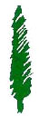

|
|
|
Associate Professor. 2021-present |
Department of Management Information Systems. | Peres Academic Center | |
|
Associate Professor. 1999-from 2022 emeritus |
Department of Information Systems. | Max Stern Academic College of Emek Yezreel |  |
| Senior Adjunct Lecturer. 1996-2022 |
Department of Information Systems. | University of Haifa | |
|
Associate Professor. 1988-1991 |
Department of Computer Networks and Systems. | Chernivtsi National University |